このチュートリアルでは、Oracleが提供するフルマネージドのRedisサービスであるOCI Cacheを、プロビジョニングから実際にredis-cliを用いて操作するところまでを体験していただけます。
1.前提条件
- クラウド環境
- Oracle Cloudのアカウント（Free Trial）を取得済みであること
2.OCI Cacheの作成
2-1. リージョンの設定
本チュートリアルでは、Cloud Shellを使用してOCI Cacheを操作します。Cloud ShellにはホームリージョンにあるVCN（Virtual Cloud Network）にアタッチする機能が備わっており、OCI CacheとCloud Shellを同じネットワークに配置するために、OCI CacheもホームリージョンのVCN内に作成します。
まずはリージョンをホームリージョンに設定します。画面右上のリージョン選択ボタンをクリックし、現在選択されているリージョンがホームリージョンであることを確認します。ホームリージョンでない場合は、ホームリージョンを選択してリージョンを変更します。
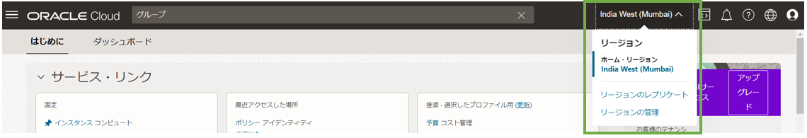
2-2. OCI Cacheの作成
画面左上のハンバーガーメニューから、「データベース」を選択し、「OCIキャッシュ」の中の「キャッシュ」を選択します。
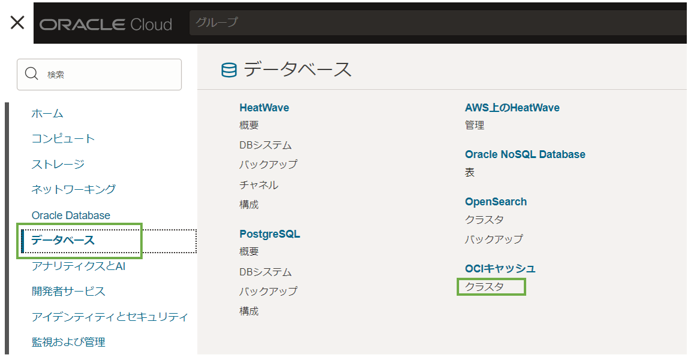
OCIキャッシュのクラスタ画面が開いたら、クラスタの作成を選択します。
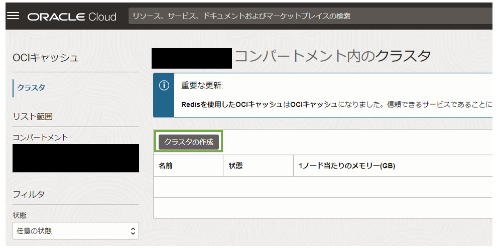
クラスタの作成に必要な設定を入力する画面が表示されます。
クラスタの構成ページでは、名前を編集します。任意の名前で問題ありませんが、ここではoci-cache-tutorialとします。名前の編集が完了したら、「次」を選択します。
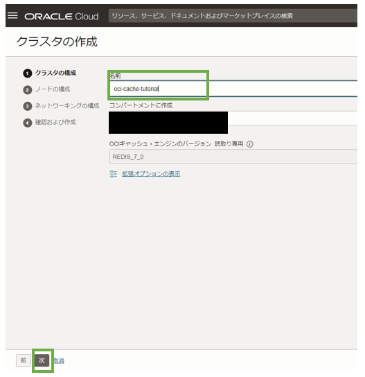
ノードの構成のページが表示されます。ここはすべてデフォルト値のままで、「次」を選択します。
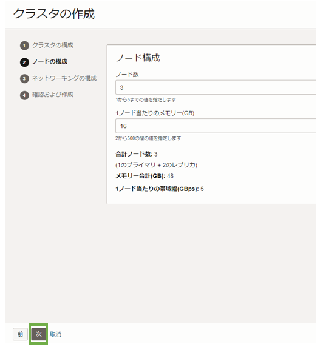
ネットワーキングの構成が表示されます。VCNの設定欄では、「新規仮想クラウド・ネットワーク名」を選択し、新規仮想クラウド・ネットワーク名を入力します。この名前は任意の名前で問題ありませんが、ここではvcn-oci-cacheとします。
サブネットの設定欄では、「新規パブリック・サブネットの作成」を選択し、新規パブリック・サブネットの作成の欄に、作成するサブネット名を入力します。この名前も任意の名前で問題ありませんが、ここではsubnet-oci-cacheとします。
すべて入力が完了したら、「次」を選択します。
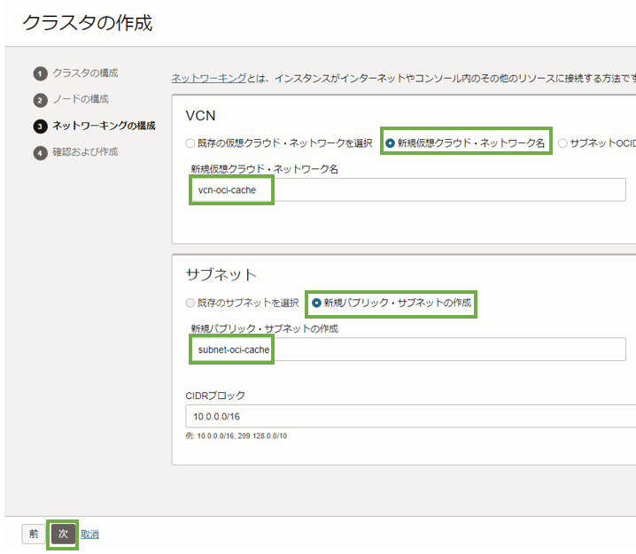
確認および作成のページが表示されます。入力した値が正しく設定されているかを確認し、「クラスタの作成」を選択します。
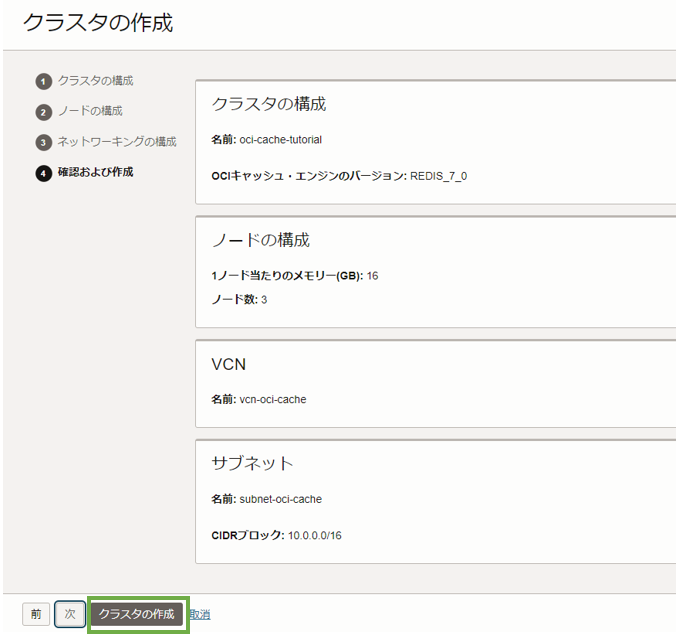
クラスタの作成が開始されます。作成中は、状態がCreatingとなります。作成には数分かかります。
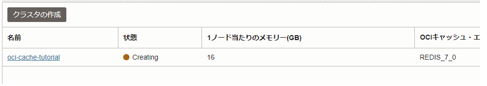
状態がActiveとなれば作成完了です。oci-cache-tutorialをクリックし、クラスタの詳細ページに移動しておきます。
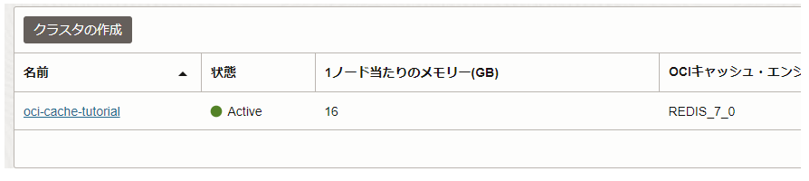
以下の画面が表示されれば、この手順は完了です。
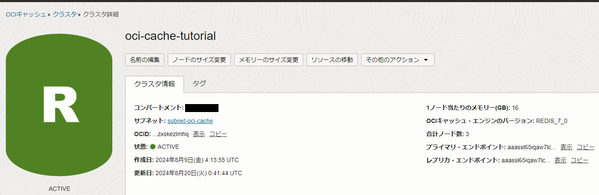
3.Redis-cliを使ったOCI Cacheの操作
ここからは、Cloud Shellを使って操作を行います。Cloud Shellは、OCIコンソール画面の右上のアイコンを選択し、「Cloud Shell」を選択します。
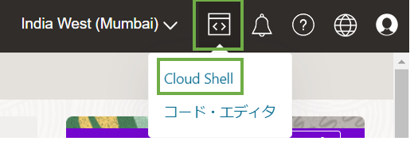
しばらく待つと、ターミナルが起動します。
3-1. redis-cliのダウンロード
OCI Cacheは、redis-cliや、SDKを使って操作することができます。今回はredis-cliを使って操作するので、下記のコマンドでCloud Shellにredis-cliをダウンロードします（パスを通さずに直接実行するため、最後にバイナリファイルの場所に移動しています）。
wget http://download.redis.io/redis-stable.tar.gz
tar xvzf redis-stable.tar.gz
cd redis-stable
make distclean
make redis-cli BUILD_TLS=yes
cd src
3-2. Cloud Shellのネットワーク設定
Cloud ShellをOCI Cacheと同じVCNに配置するための設定を行います。Cloud Shellの上部にある、「ネットワーク：パブリック」を選択します。
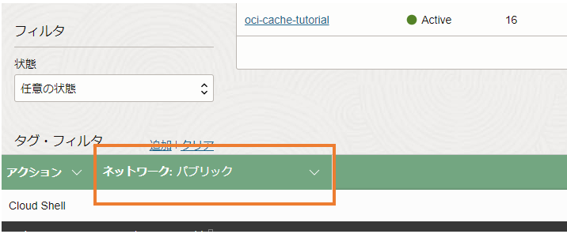
表示されたメニューから、「プライベート・ネットワーク定義リスト」を選択します。
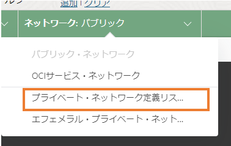
プライベート・ネットワーク定義リストのページが開くので、「プライベート・ネットワーク定義の作成」を選択します。
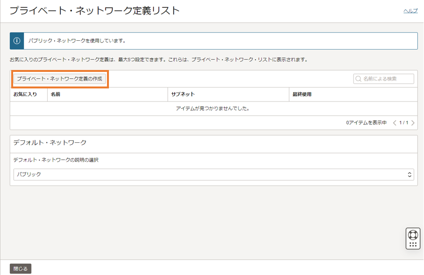
プライベート・ネットワーク定義の作成ページでは、以下の項目を設定します。
- 名前
- Cloud Shellを配置するVCN
- Cloud Shellを配置するサブネット
- アクティブなネットワークとして使用
名前は任意の名前で問題ありませんが、ここではoci-cache-tutorialとしています。VCNとサブネットは、OCI Cacheを作成する際に一緒に作成したVCNとサブネットを選択します。また、「アクティブなネットワークとして使用」のチェックボックスにチェックを入れます。その後、「作成」を選択します。
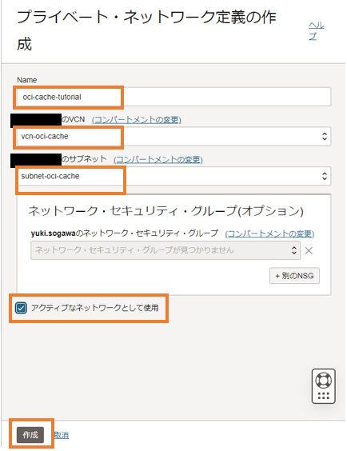
画面上部に「プライベート・ネットワーク”oci-cache-tutorial”を使用しています」と表示されていれば、「閉じる」を選択します。表示されていない場合（「アクティブなネットワークとして使用」にチェックを入れなかった場合表示されません）、作成したプライベート・ネットワーク定義のケバブメニューから、「アクティブなネットワークとして使用」を選択してアクティブにします。
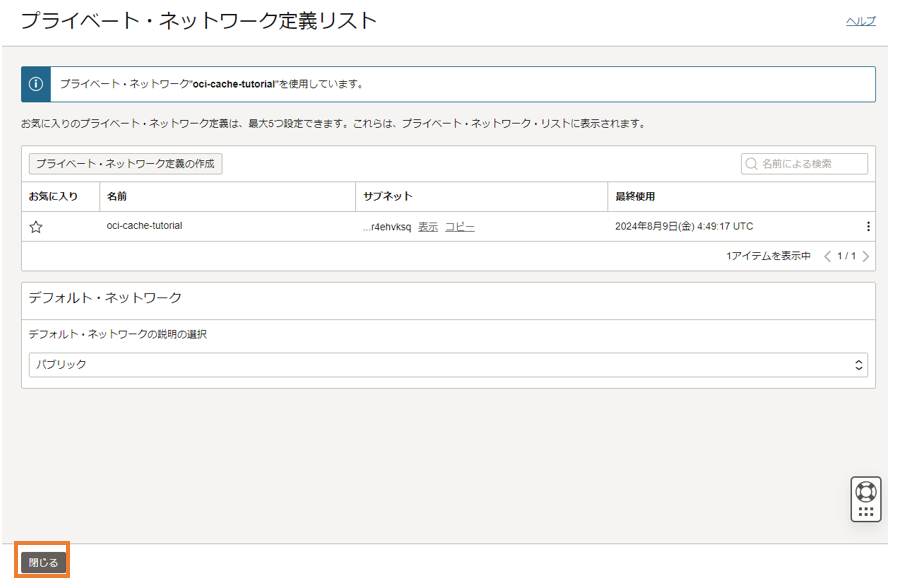
Cloud Shellの右上にある、矢印のアイコンをクリックし、クラウドシェルを小さくします。
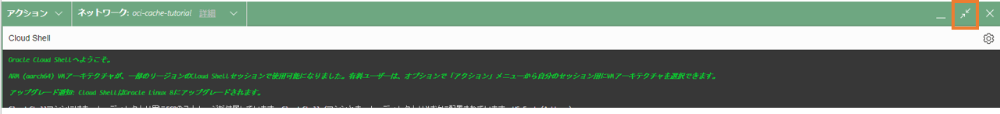
Cloud Shellを小さくしたことで作成したOCI Cacheの画面が見えるようになるので、プライマリ・エンドポイントの値をコピーします。
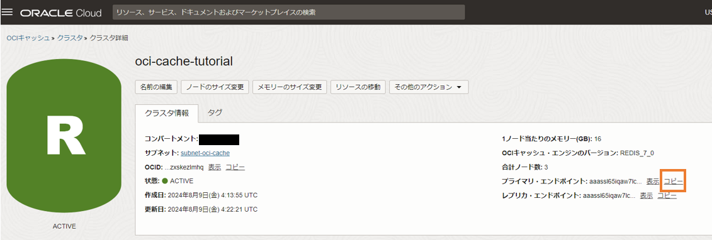
Cloud Shellに、下記のコマンドを入力して接続状況確認を行います。PONGと返ってきたら成功です。
./redis-cli --tls -h <プライマリ・エンドポイントの値> ping
# PONGと返ってきたら成功
3-3. OCI Cacheの操作
ここからは、実際にredis-cliを使ってOCI Cacheを操作していきます。
OCI Cacheはkey-valueストアなので、値を設定するときはkeyとvalueを指定し、値を取得・削除するときはkeyを指定します。基本的な操作は以下の様に行えます。
redis-cli -h <プライマリ・エンドポイントの値> # OCI Cacheに接続
SET key1 "value1" # キーに値を設定
GET key1 # キーの値を取得
DEL key1 # キーを削除
KEYS * # キーの一覧を取得（パターンにマッチするキーを取得）
FLUSHDB # 現在のデータベース内のすべてのキーを削除
FLUSHALL # 全てのデータベースのすべてのキーを削除
SELECT <データベース番号> # データベースを切り替え
Redisはデフォルトで16個（0~15）のデータベースを持ち、これはOCI Cacheも同様です。
では、実際に基本的なコマンドを実行して動作を確認してみましょう。下記のコマンドを順に入力します。
SET cat NEKO
OK
SET dog INU
OK
GET cat
"NEKO"
GET dog
"INU"
DEL cat
(integer) 1
GET cat
(nil)
以上がOCI Cacheの作成と、基本的な操作方法になります。OCI Cacheは他にもSDKを用いた操作などが行えますので、必ずしもredis-cliを用いる必要はない点に注意してください。